In this homework, I implemented several techniques for constructing, modifying, and smoothing geometric models. I used de Casteljau's algorithm to evaluate Bezier curves and surfaces, computed area-weighted vertex normals for smooth shading, and implemented local edge flip and edge split operations on a half-edge mesh. I then combined these mesh operations to implement Loop subdivision, including support for boundary edges. As an extra exploration, I also implemented Root-3 subdivision and compared its face-centered refinement with the edge-centered refinement used by Loop subdivision.
The most important lesson I learned is that modifying a complex data structure
requires a systematic approach. A half-edge mesh can initially seem confusing
because every local operation affects many related iterators at once. However,
the process becomes manageable when I first record the complete local
neighborhood, create all required elements, and then update every iterator in
a fixed order. Clear naming conventions and consistent rules for assigning
next, twin, vertex, edge, and face relationships
prevent the implementation from becoming disorganized. Following a deliberate
sequence made the code easier to reason about, debug, and verify.
Given \(n+1\) control points \(P_0,\ldots,P_n\), de Casteljau's algorithm repeatedly linearly interpolates between every pair of adjacent points. Let \(P_i^{(0)}=P_i\). At recursion level \(r\), the new points are
\[ P_i^{(r)}(t)=(1-t)P_i^{(r-1)}(t)+tP_{i+1}^{(r-1)}(t), \qquad 0\leq t\leq 1. \]Each level contains one fewer point than the previous level, so after \(n\) levels only one point remains. The point on the Bezier curve evaluated at parameter \(t\) is therefore
\[ B(t)=P_0^{(n)}(t). \]For my six-control-point curve, \(n=5\), so the final point is \(B(t)=P_0^{(5)}(t)\).
Evaluating the algorithm for values of \(t\) throughout \([0,1]\) traces the entire curve.
In my implementation, evaluateStep loops over adjacent input
points and appends
(1 - t) * points[i] + t * points[i + 1] to a new vector. It
returns this vector, which always has one fewer point. Repeating the step until
one point remains evaluates the curve at the selected \(t\); sampling many
values of \(t\) draws the complete curve.
The following sequence shows every level of de Casteljau evaluation at \(t=0.5\). White squares are the original control points, blue squares are intermediate points, and the red square is the final point on the curve.
|
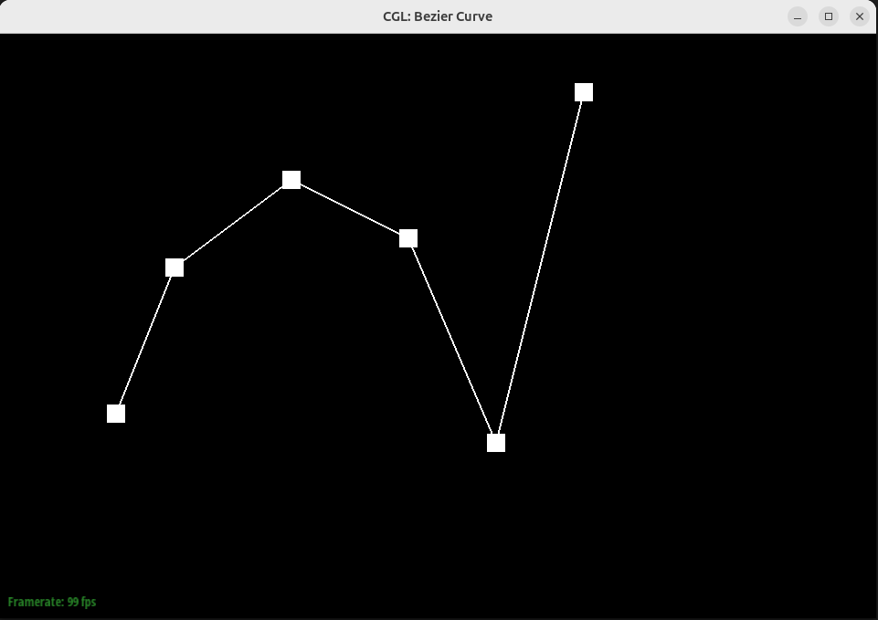 |
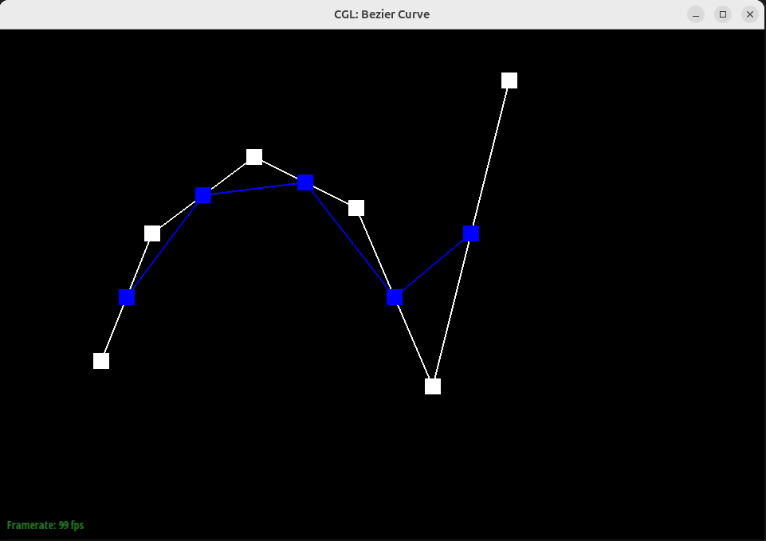 |
|
|
|
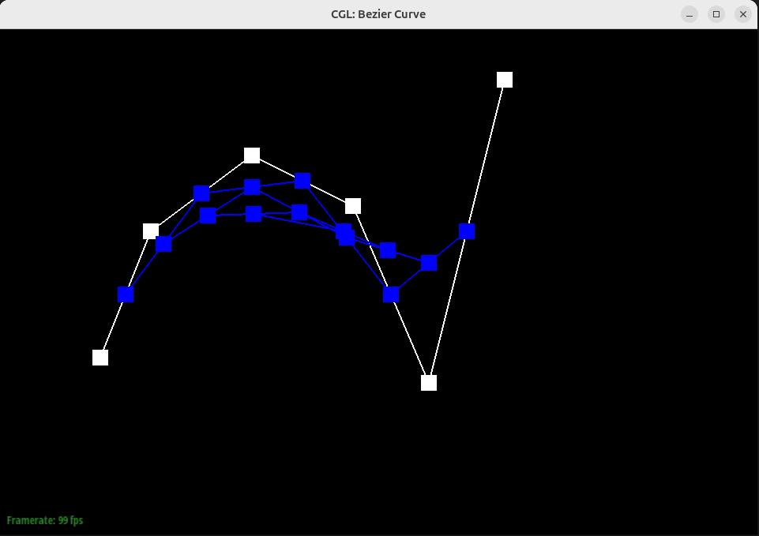 |
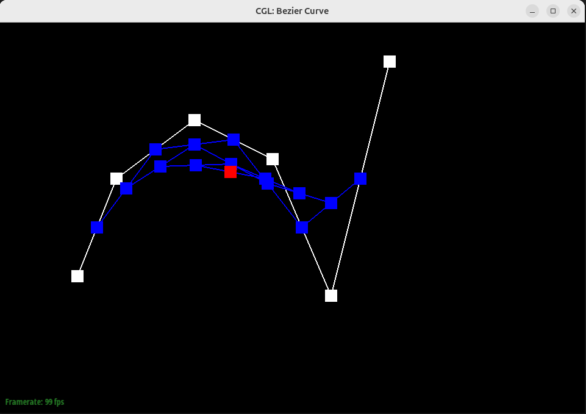 |
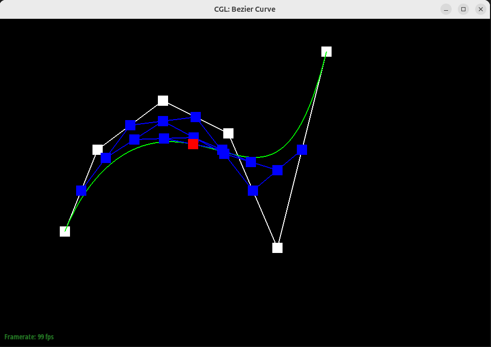
I moved the original control points to create a different curve and used mouse scrolling to change \(t\). Moving a control point changes the shape of the curve, while changing \(t\) moves the red evaluated point along the same curve and recomputes all intermediate interpolation levels.
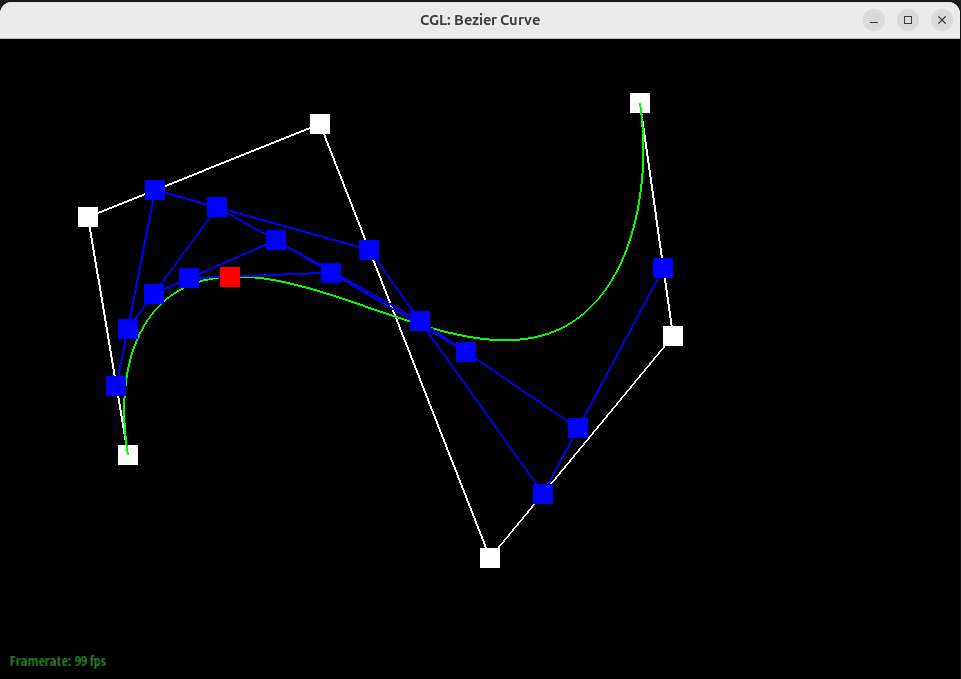
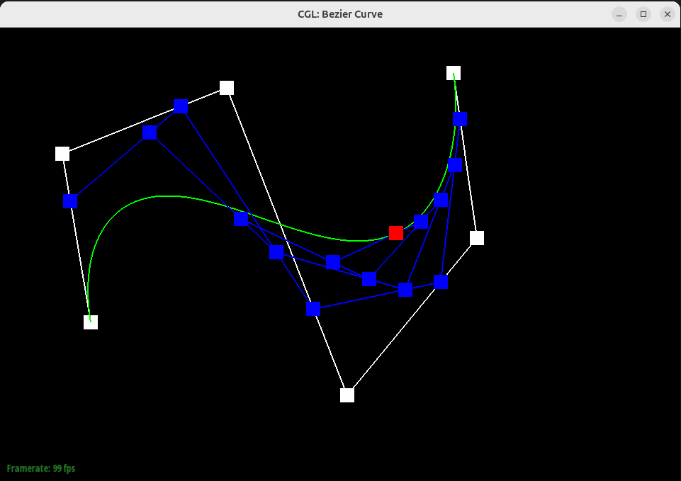
A Bezier surface is defined by a rectangular grid of 3D control points and
two parameters, \(u\) and \(v\), which represent positions along the two
parametric directions of the surface. Since a Bezier surface is separable,
it can be evaluated by applying the 1D de Casteljau algorithm twice.
BezierPatch::evaluateStep(points, t) performs one level of
linear interpolation between adjacent 3D points and returns a vector with one
fewer point. BezierPatch::evaluate1D(points, t) repeatedly calls
evaluateStep until only one point remains, thereby evaluating a
1D Bezier curve at \(t\).
To evaluate a point on the surface,
BezierPatch::evaluate(u, v) first calls
evaluate1D on every row of the control-point grid using \(u\).
This reduces each row to one point and produces a list of intermediate 3D
points. It then calls evaluate1D on that list using \(v\),
reducing the list to the final point on the Bezier surface. Repeating this
process for sampled pairs \((u,v)\in[0,1]^2\) generates the entire surface.
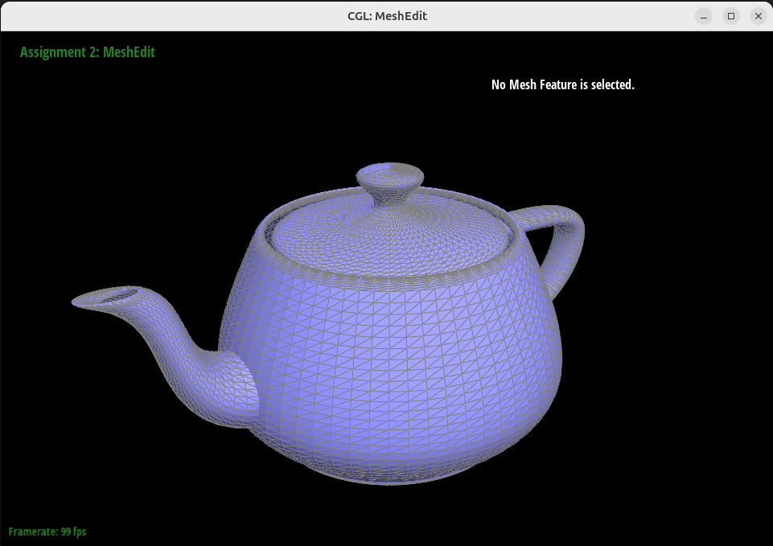
To compute the normal at a vertex, I begin with the vertex's representative
halfedge and traverse its entire one-ring neighborhood using
h = h->twin()->next(). This moves to the next face incident
to the same vertex. Boundary faces do not represent surface triangles, so I
skip any halfedge whose face satisfies isBoundary().
For each incident triangle, I let \(p_0\) be the current vertex and obtain \(p_1\) and \(p_2\) from the next two halfedges. I then compute the unnormalized face normal
\[ N_f=(p_1-p_0)\times(p_2-p_0). \]The magnitude of this cross product is twice the area of the triangle. Therefore, adding these unnormalized normals automatically gives larger triangles proportionally more influence than smaller triangles. After the traversal returns to the starting halfedge, I normalize the accumulated vector:
\[ n_v=\frac{\sum_{f\ni v}N_f} {\left\|\sum_{f\ni v}N_f\right\|}. \]
The consistent halfedge winding keeps all incident face normals oriented in
the same direction. Returning n.unit() produces the unit vertex
normal used for Phong interpolation across the surrounding triangles.
Applying these area-weighted vertex normals does not change the mesh geometry or add any triangles. It changes only how lighting is evaluated. With flat shading, each triangle uses one face normal, so the boundaries between triangles are clearly visible. With Phong shading, the vertex normals are interpolated across each triangle, producing gradual lighting changes between neighboring faces. As a result, the teapot appears much smoother even though its underlying triangle mesh is unchanged.
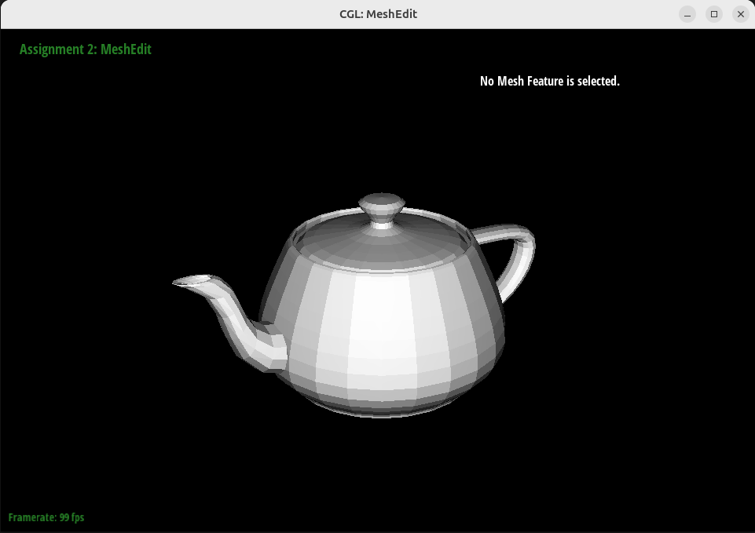
An edge flip operates on two triangles that share an interior edge. It keeps
the same vertices, edges, halfedges, and faces, but replaces the shared
diagonal with the other diagonal of the quadrilateral. In my implementation,
I immediately return e0 if it is a boundary edge because such an
edge does not have two adjacent interior triangles.
For an interior edge, h0 and h1 are the two
halfedges of e0. Their starting vertices are v0 and
v1. I first save the other four local halfedges,
h10, h00, h01, and
h11, together with their vertices, edges, and the two faces.
The opposite vertices are v00 in f0 and
v11 in f1. Saving all of these iterators before
rewiring prevents the original neighborhood from being lost when the
next iterators are changed.
Before the flip, e0 connects v0 and
v1. I reuse h0 and h1 for the flipped
edge, changing their starting vertices to v11 and
v00, respectively. Therefore, e0 now connects the
two opposite vertices v11 and v00. The two face
cycles change as follows:
| Face | Before the flip | After the flip | Representative |
|---|---|---|---|
f0 |
h0 → h10 → h00 → h0v0 → v1 → v00
|
h0 → h00 → h01 → h0v11 → v00 → v0
|
f0->halfedge() = h0 |
f1 |
h1 → h01 → h11 → h1v1 → v0 → v11
|
h1 → h11 → h10 → h1v00 → v11 → v1
|
f1->halfedge() = h1 |
I use setNeighbors(next, twin, vertex, edge, face) to reset all
five iterators of the six affected halfedges. The outside twin and edge
iterators of h00, h01, h10, and
h11 do not change, but their next and face
assignments are updated to form the two cycles above. I then set the
representative halfedges to v0: h01, v1: h10,
v00: h00, and v11: h11, and keep
e0->halfedge() = h0.
My main debugging strategy was to record the complete local neighborhood
before changing it and then explicitly reassign every iterator in the two
triangles. Checking that both three-halfedge cycles closed correctly and that
each representative halfedge started at its vertex made it easier to catch
incorrect next or face assignments. I also tested consecutive
flips in the same area of the teapot to confirm that the resulting mesh
remained connected.
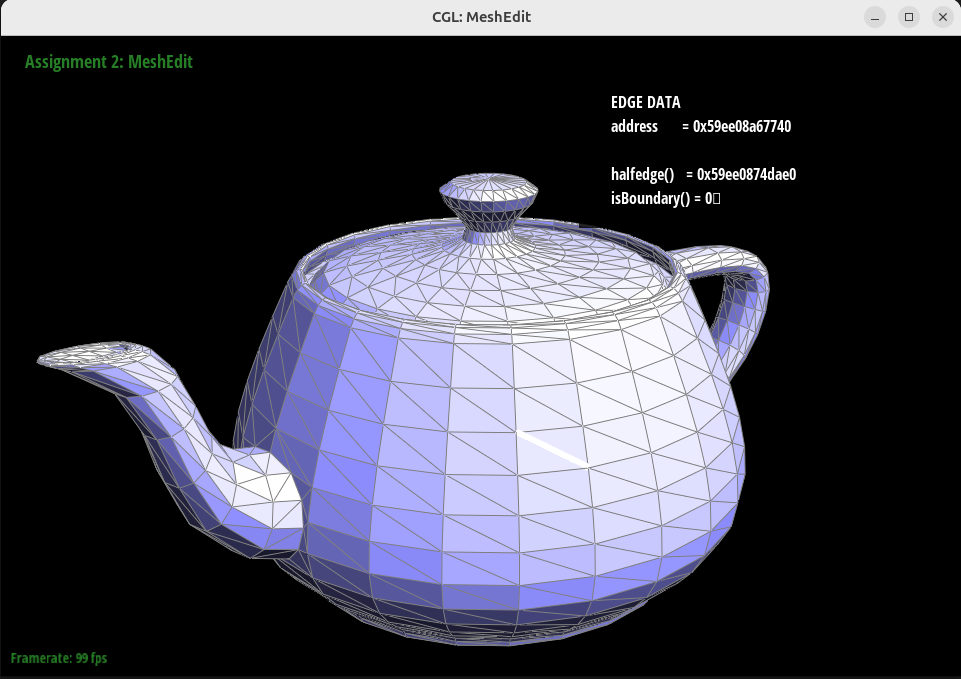
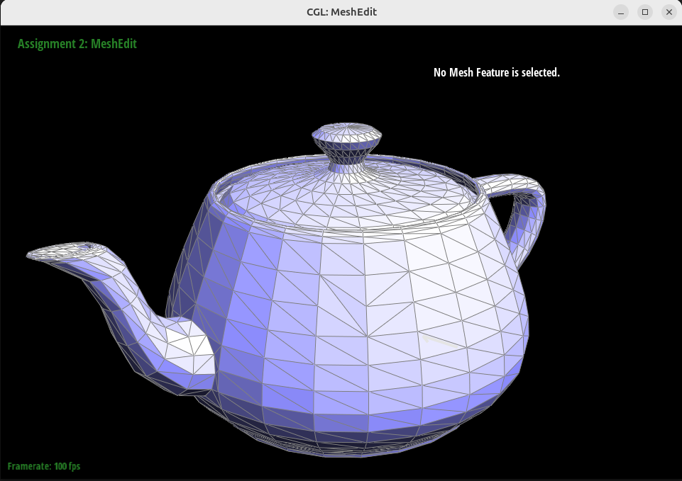
For an interior edge \(e0=(b,c)\), the two incident faces are initially \(f0=(b,c,a)\) and \(f1=(c,b,d)\). The split inserts a new vertex \(m\) at the midpoint of \(b\) and \(c\), divides the original edge into \((b,m)\) and \((m,c)\), and connects \(m\) to the two opposite vertices \(a\) and \(d\). The original two triangles are therefore replaced by four triangles.
Before modifying any iterators, I save the entire local neighborhood in
iterators: the six original halfedges h00,
h10, h20, h01,
h11, and h21; the exterior twins; the surrounding
edges; the two faces; and the four vertices. This is important because once a
next or twin iterator is changed, traversing the mesh
can no longer be used to recover the original neighborhood reliably.
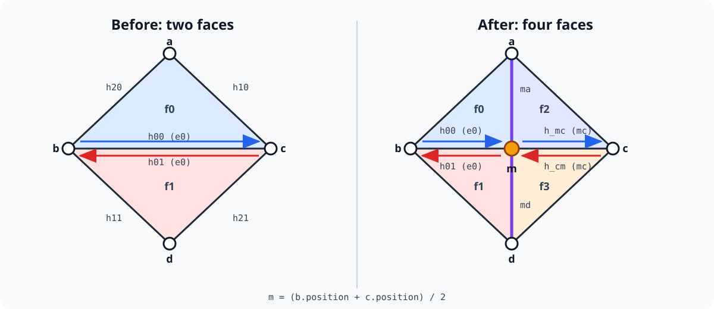
I create one vertex m, three edges mc,
ma, and md, six halfedges for those edges, and two
new faces f2 and f3. The original
e0, h00, and h01 are reused for the
edge \((b,m)\). I then rebuild each face as the following closed halfedge
cycle. Every halfedge in a row is assigned to that row's face.
| Face | Vertex cycle | next cycle and face assignment |
Representative |
|---|---|---|---|
f0 (reused) |
\(b\rightarrow m\rightarrow a\) |
h00 → h_ma → h20 → h00;
all three use face = f0
|
f0->halfedge() = h00 |
f1 (reused) |
\(m\rightarrow b\rightarrow d\) |
h01 → h11 → h_dm → h01;
all three use face = f1
|
f1->halfedge() = h01 |
f2 (new) |
\(m\rightarrow c\rightarrow a\) |
h_mc → h10 → h_am → h_mc;
all three use face = f2
|
f2->halfedge() = h_mc |
f3 (new) |
\(c\rightarrow m\rightarrow d\) |
h_cm → h_md → h21 → h_cm;
all three use face = f3
|
f3->halfedge() = h_cm |
After establishing these four cycles, I assign the twin pairs
(h00, h01), (h_mc, h_cm),
(h_ma, h_am), and (h_md, h_dm), and set every
halfedge's vertex, edge, and face iterators with setNeighbors.
I set the edge representatives to e0->halfedge() = h00,
mc->halfedge() = h_mc,
ma->halfedge() = h_ma, and
md->halfedge() = h_md. The new vertex uses
h01, which points from \(m\) toward \(b\), as its representative
halfedge. Since h01 originally started at \(c\), I redirect
c->halfedge() to h10 when necessary.
For Loop subdivision bookkeeping, I mark m as new. The two
segments of the original edge, represented by e0 and
mc, are marked old, while the new cross edges ma
and md are marked new. My main debugging strategy was to separate
the operation into three phases: record the original neighborhood, allocate
all new elements, and only then assign every iterator in the affected region.
Explicitly resetting all five iterators of each local halfedge helped avoid
stale references and made repeated split and flip tests reliable.
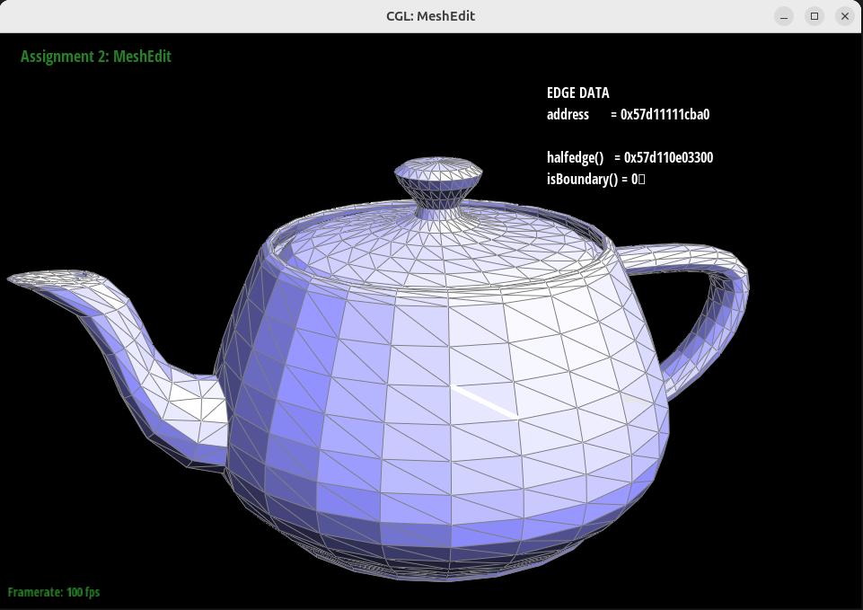
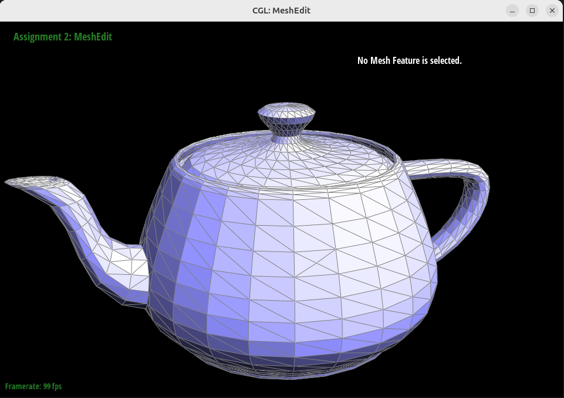
For a boundary edge, only one adjacent face is an interior triangle. I first
normalize the orientation of the input edge: if e0->halfedge()
is a boundary halfedge, I replace it with its twin. As a result,
h00 always belongs to the interior face f0, while
h01 = h00->twin() belongs to boundaryface. I save
h11 = h01->next() before changing any iterators because it is
the first halfedge in the remainder of the existing boundary loop.
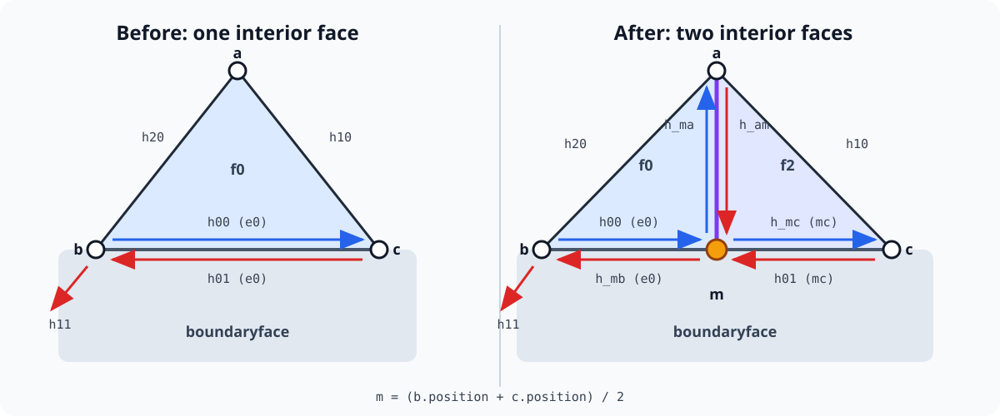
I insert m at the midpoint of \(b\) and \(c\). Compared with an
interior split, this case creates only two edges, mc and
ma; four halfedges, h_mc, h_mb,
h_ma, and h_am; and one new interior face
f2. The original edge e0 is reused for
\((b,m)\). The interior face and boundary loop are then rebuilt as follows:
| Region | Vertex cycle | next sequence |
Representative |
|---|---|---|---|
f0 (reused) |
\(b\rightarrow m\rightarrow a\) |
h00 → h_ma → h20 → h00
|
f0->halfedge() = h00 |
f2 (new) |
\(m\rightarrow c\rightarrow a\) |
h_mc → h10 → h_am → h_mc
|
f2->halfedge() = h_mc |
boundaryface (reused) |
\(c\rightarrow m\rightarrow b\rightarrow\cdots\) |
h01 → h_mb → h11 → ...
|
boundaryface->halfedge() = h01 |
The new twin pairs are (h00, h_mb),
(h_mc, h01), and (h_ma, h_am). In particular,
inserting h_mb between h01 and the saved
h11 preserves the original boundary loop. I set
e0->halfedge() = h00,
mc->halfedge() = h_mc, and
ma->halfedge() = h_ma. The new vertex uses
h_mb as its representative halfedge, so it points along the
split boundary edge rather than the new cross edge.
For Loop subdivision bookkeeping, m and ma are
marked new. The two boundary segments e0 and mc
are marked old because they are the two parts of the original edge.
My Loop subdivision implementation separates geometry calculations from
topology changes. All new positions are computed from the original mesh and
stored in newPosition before any edge is split. This prevents
vertices created or moved earlier in the process from affecting the weights
used later in the same subdivision step.
I first mark every original vertex with isNew = false. For each
vertex \(v\), I traverse its one-ring neighborhood with
h = h->twin()->next(), count its degree \(n\), and sum the
positions of its neighbors. For an interior vertex, I set \(u=3/16\) when
\(n=3\), and \(u=3/(8n)\) otherwise. I then compute
The result is stored in Vertex::newPosition; the current
position is not changed yet.
For an interior edge with endpoints \(A\) and \(B\) and opposite vertices \(C\) and \(D\), I store
\[ e_{\text{new}}=\frac{3}{8}(A+B)+\frac{1}{8}(C+D) \]
in Edge::newPosition. While performing this pass, I mark every
original edge as old and save its iterator in originalEdges.
I iterate over originalEdges rather than the live mesh edge list.
This is necessary because splitEdge creates additional edges; if
those edges were also visited, the loop would continue splitting its own
results. Before each split, I copy the edge's saved
newPosition. The vertex returned by
mesh.splitEdge(e) is marked new, and the copied position is stored
in its newPosition.
After all original edges have been split, I iterate over the updated edge
list. I skip every edge whose isNew flag is false. For each new
edge, I compare the isNew flags of its two endpoints and flip the
edge exactly when one endpoint is old and the other is new. Together with the
splits, these flips replace every original triangle with four smaller
triangles having the connectivity required by Loop subdivision.
Finally, after all topology operations are complete, I copy each vertex's
newPosition into position. Delaying this assignment
until the end ensures that every weight in the current iteration was computed
from the same original geometry.
Unlike area-weighted vertex normals, which only change the lighting, Loop subdivision makes the object smooth by changing the mesh itself. Each subdivision step splits edges, increases the number of triangles, changes the mesh connectivity, and moves vertices to their weighted positions. On the teapot, the initially visible facets become progressively less pronounced, while the body, handle, and spout develop smoother geometry and silhouettes.
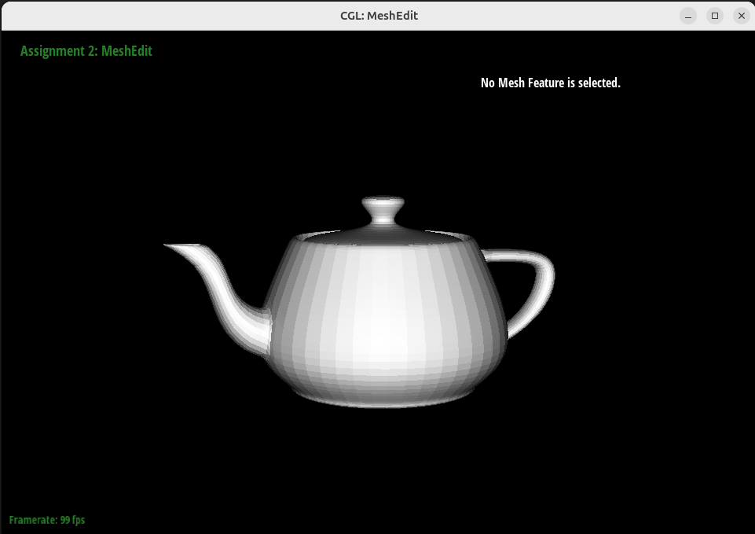
Loop subdivision is an approximating scheme, so the original vertices generally move and sharp corners and edges become rounded. Adding support edges by pre-splitting edges near a sharp feature gives the subdivision more control points close to that feature and reduces this rounding.
The cube also becomes slightly asymmetric after repeated subdivision. Each quadrilateral face is represented by two triangles, and the chosen face diagonals do not give all cube corners identical one-ring neighborhoods. Because Loop weights depend on vertex degree and neighboring positions, this asymmetric triangulation produces unequal updates even though the original cube geometry is symmetric. To balance the triangulation, I split the diagonal edge on each of the cube's six faces. This creates one center vertex and four triangles on every face, giving corresponding cube corners the same degree and one-ring structure.
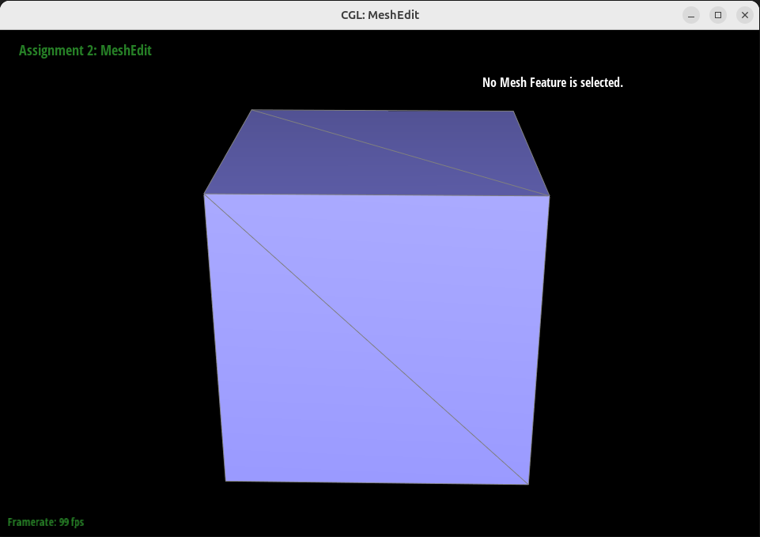
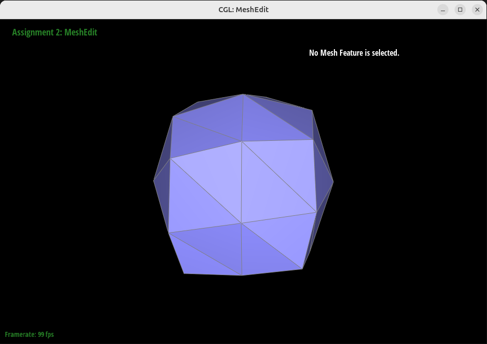
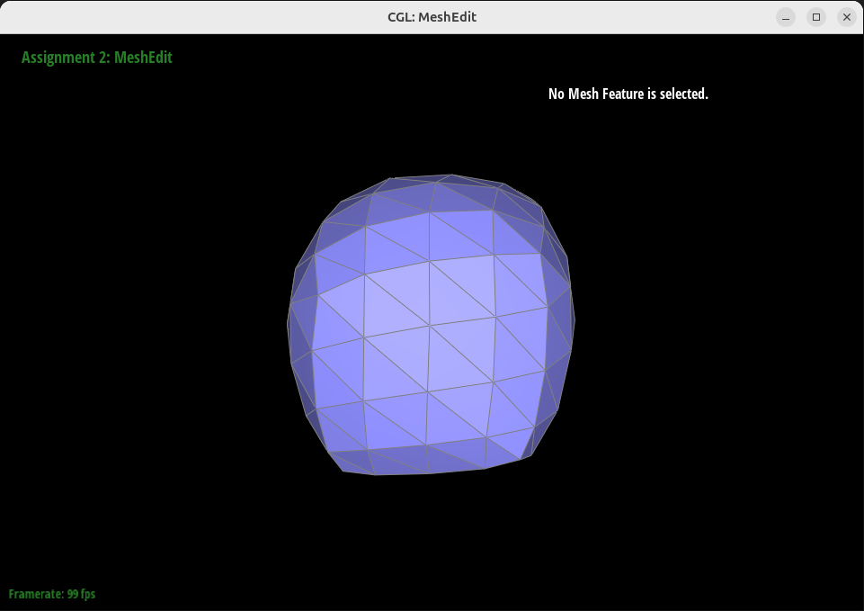
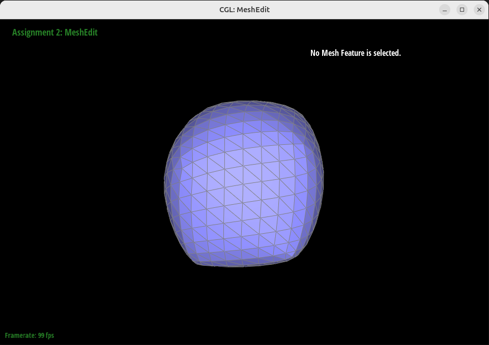
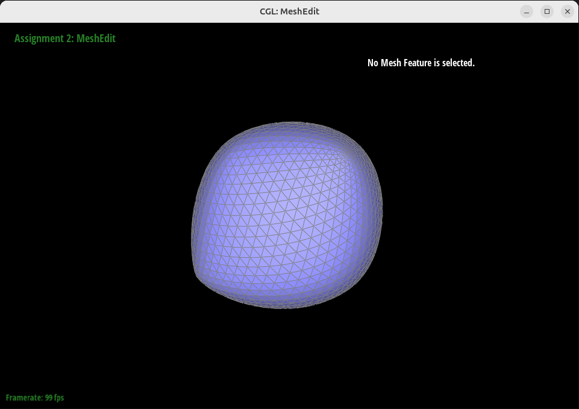
After the six face diagonals are split, each original cube corner is connected to its three adjacent corners and the centers of its three incident faces. Therefore, all eight original corners have degree six and receive equivalent Loop subdivision weights. Compared with the unprocessed cube above, the pre-split cube becomes round in a much more symmetric way and develops a more uniform triangle distribution.
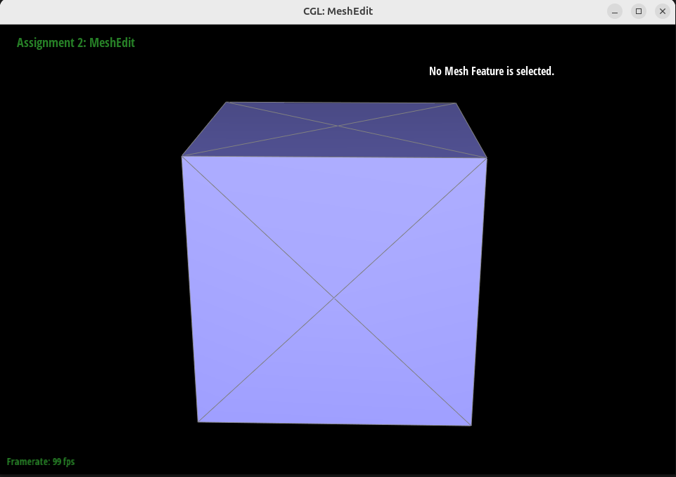
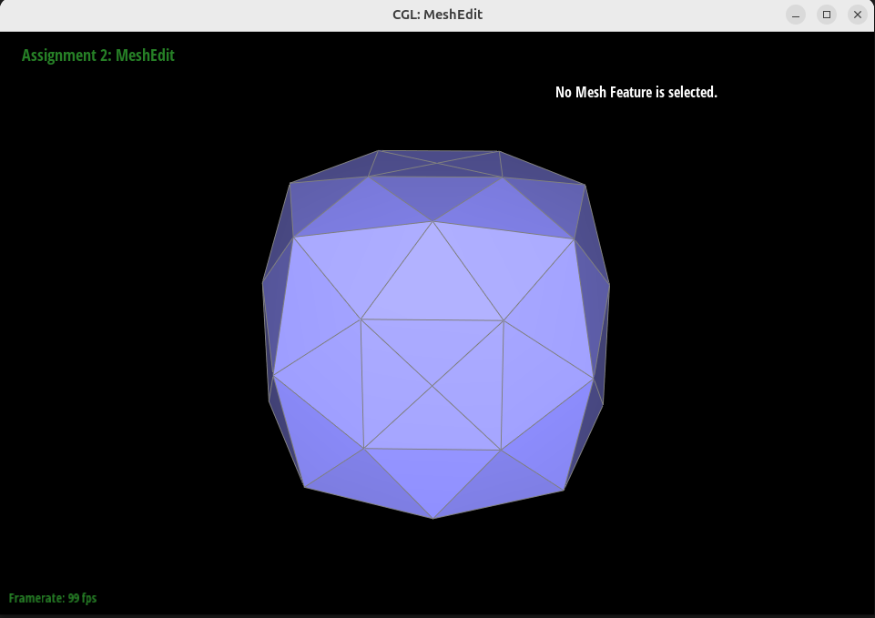
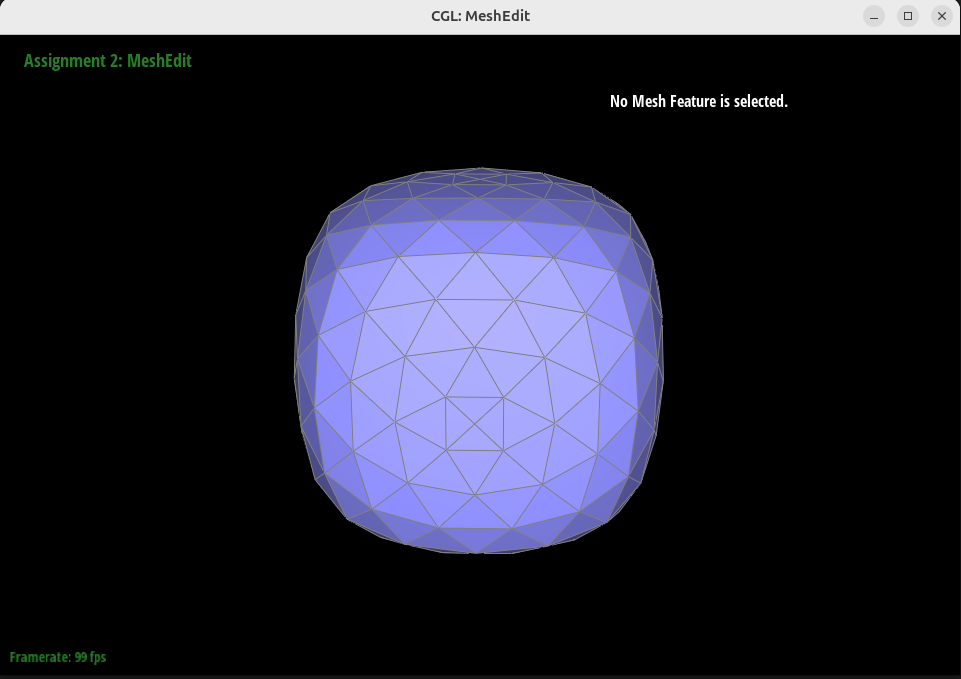
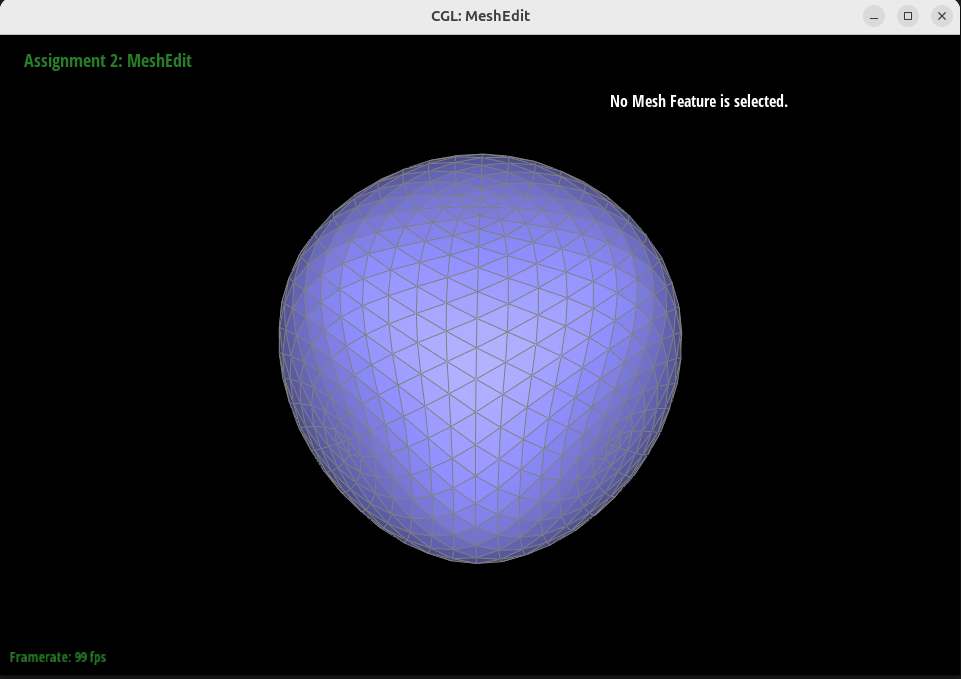
I also implemented \(\sqrt{3}\) subdivision as an alternative smoothing scheme for closed triangle meshes. Unlike Loop subdivision, which inserts a new vertex on every original edge and divides each triangle into four, \(\sqrt{3}\) subdivision inserts one new vertex at the center of every original face, divides the face into three triangles, and then flips all original interior edges. As a result, the number of triangles grows by a factor of three per iteration rather than four.
I first mark every original vertex with isNew = false. For an
original vertex \(v\) of degree \(n\), I traverse its one-ring neighborhood
with h = h->twin()->next() and sum the positions of its
neighbors. I compute the valence-dependent weight
and store the relaxed position
\[ v_{\text{new}}=(1-\alpha_n)v+ \frac{\alpha_n}{n}\sum_{i=1}^{n}v_i \]
Before creating any new elements, I save every original edge in
originalEdges and every original face in
originalFaces. These saved iterators ensure that the current
iteration processes only the input mesh, rather than recursively processing
faces and edges that it creates.
For each non-boundary triangular face, I obtain its vertices
v0, v1, and v2 from
h0, h1, and h2. The new vertex
vc is placed at the face centroid:
I mark vc as new, connect it to all three original vertices,
and create three edges, six halfedges, and two additional faces. The original
face is reused as f0, while f1 and
f2 are new. I rebuild the three face cycles as follows:
| Face | Vertex cycle | Halfedge cycle | Representative |
|---|---|---|---|
f0 (reused) |
v0 → v1 → vc
|
h0 → in1 → out0 → h0
|
f0->halfedge() = h0 |
f1 (new) |
v1 → v2 → vc
|
h1 → in2 → out1 → h1
|
f1->halfedge() = h1 |
f2 (new) |
v2 → v0 → vc
|
h2 → in0 → out2 → h2
|
f2->halfedge() = h2 |
The new twin pairs are (in0, out0),
(in1, out1), and (in2, out2). I also assign
representative halfedges to all four vertices and the three new edges. This
turns one original triangle into three triangles that share
vc.
After all faces have been split, I iterate over
originalEdges and flip every non-boundary edge. After the
face-split step, each original edge still connects its two original vertices.
Flipping that edge replaces it with an edge connecting the two new centroid
vertices on its opposite sides. This completes the Root-3 topology.
Finally, I copy newPosition into position only for
vertices whose isNew flag is false. The new centroid vertices
keep the positions assigned during the face-split stage. Two iterations give
a one-to-nine refinement of each original triangle, compared with the
one-to-sixteen refinement produced by two Loop subdivision steps.
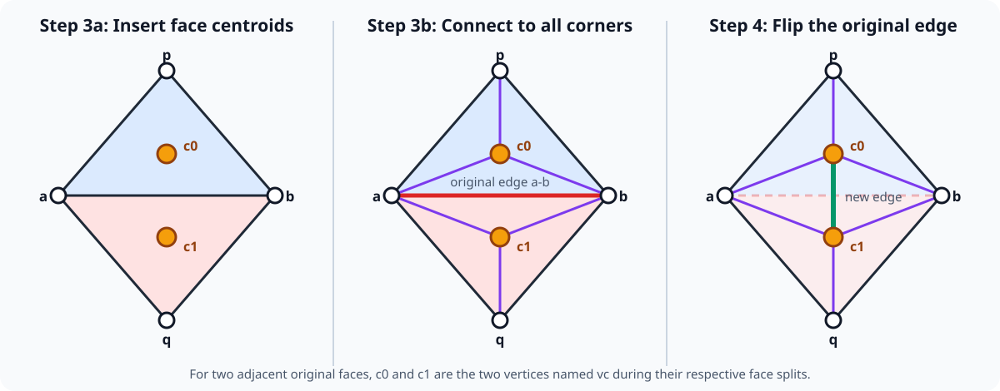
Compared with regular Loop subdivision, Root-3 subdivision increases the number of triangles by a factor of three per step rather than four. Therefore, after the same number of iterations, the Root-3 mesh remains less dense and its smoothing progresses more gradually, while Loop subdivision refines and rounds the model more quickly. The two methods also produce different connectivity: Loop inserts new vertices on the original edges, whereas Root-3 inserts vertices at face centroids and flips the original edges.
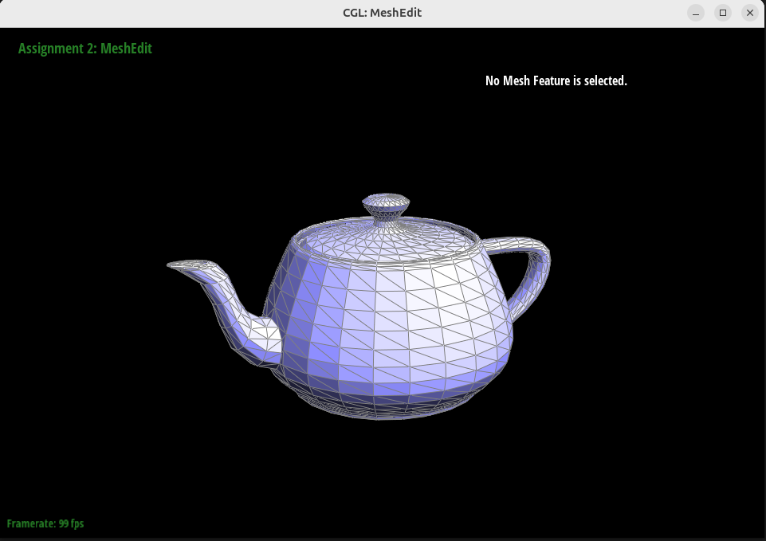
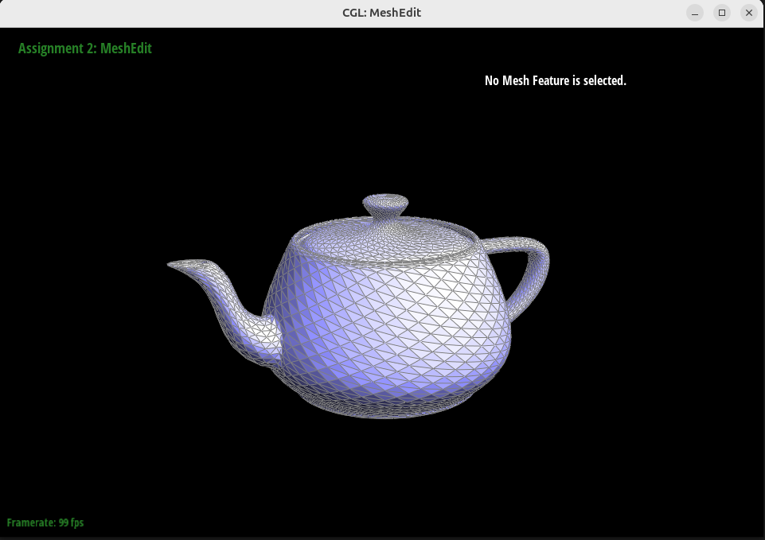
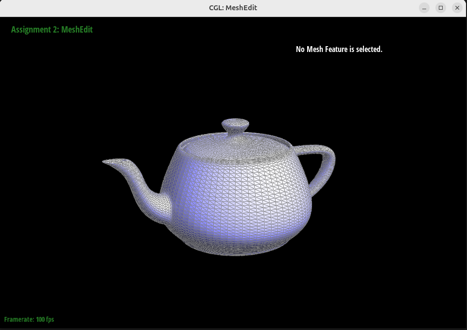
I extended Loop subdivision to meshes with boundaries by using separate position rules for boundary vertices and boundary edges. For a boundary vertex \(v\), I sum only its two boundary neighbors \(v_{b0}\) and \(v_{b1}\) and compute
\[ v_{\text{new}}=\frac{3}{4}v+ \frac{1}{8}\left(v_{b0}+v_{b1}\right). \]
For a boundary edge with endpoints \(A\) and \(B\), the new vertex is placed
at the midpoint, \(e_{\text{new}}=(A+B)/2\), rather than using the four-point
interior-edge rule. During the split stage, these edges are handled by my
boundary-aware splitEdge implementation from Part 5. The remaining
stages use the same isNew bookkeeping and delayed position update
as the interior algorithm.